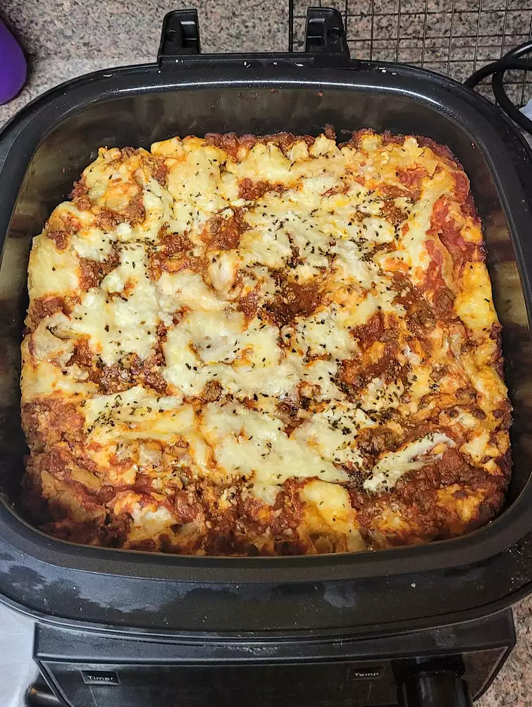

Slow Cooker Lasagna

Description
This Crock-Pot lasagna recipe is so easy, you might think that you
missed something. It is a delicious slow cooker meal!
Personally, I love lasagna, but I also love slow cooking. So,
this recipe marries my two passions into one convenient recipe suitable
for any family gathering or large dinner plans you may have (or maybe
you can just have the leftovers all to yourself). Either way, lasagna
cannot be beat and neither can this recipe.
Ingredients
- 1 pound lean ground beef
- 1 medium onion, chopped
- 2 teaspoons minced garlic
- 1 (29 ounce) can tomato sauce
- 1 (6 ounce) can tomato paste
- 1 1/2 teaspoons salt
- 1 teaspoon dried oregano
- 16 ounces shredded mozzarella cheese
- 12 ounces cottage cheese
- 1/2 cup grated Parmesan cheese
- 1 (12 ounce) package lasagna noodles
Steps
- Step One: Cook ground beef, onion, and garlic in a large skillet over
medium heat until the meat is browned. Add tomato sauce, tomato paste,
salt, and oregano and stir until well combined and heated through.
- Step Two: Stir mozzarella, cottage cheese, and Parmesan together in a
large bowl.
- Step Three: Spoon a layer of the meat mixture onto the bottom of a
slow cooker. Add a double layer of uncooked lasagna noodles, breaking
noodles to fit into cooker as needed. Top noodles with a portion of
cheese mixture. Repeat the layering of sauce, noodles, and cheese until
all the ingredients are used.
- Step Four: Cover and cook on Low for 4 to 6 hours.